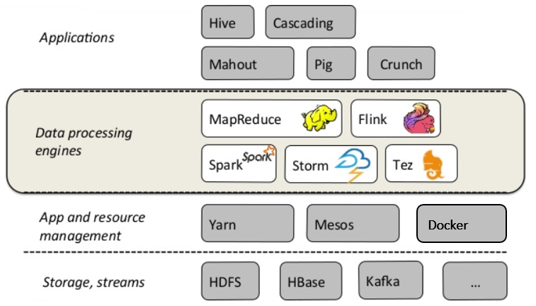
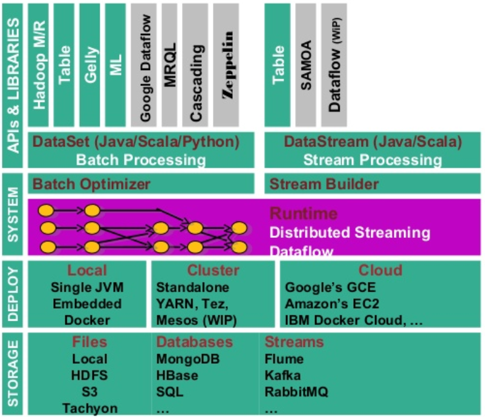
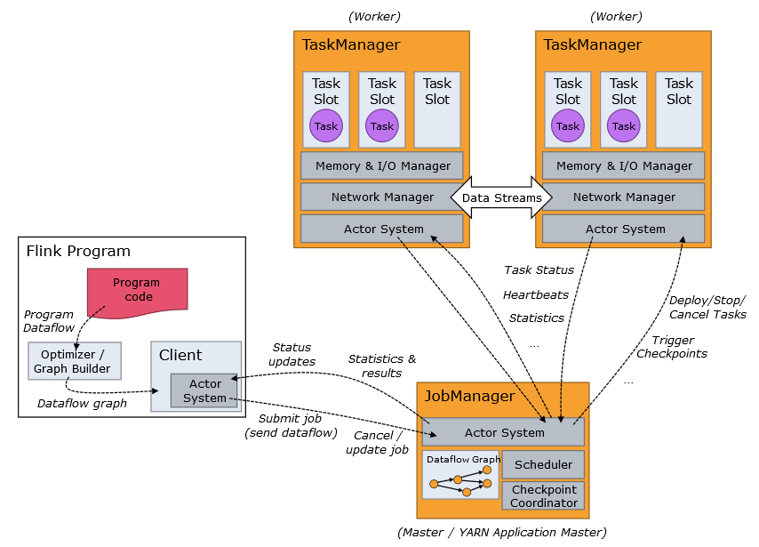
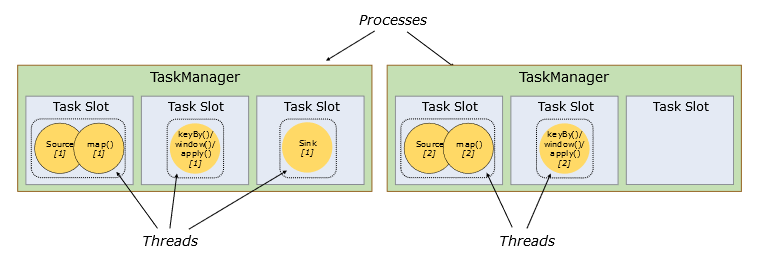
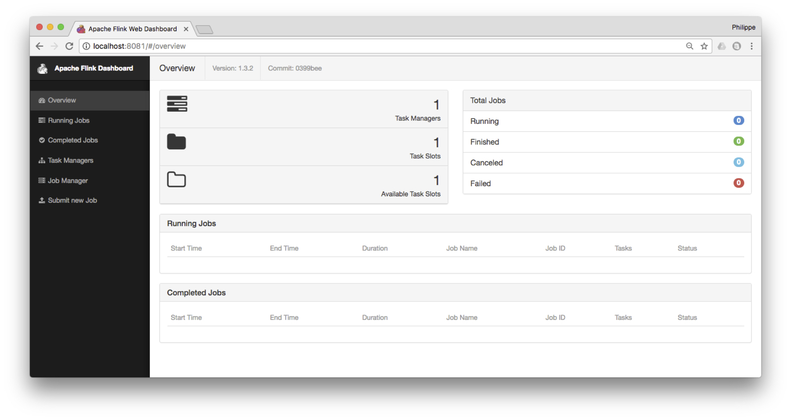
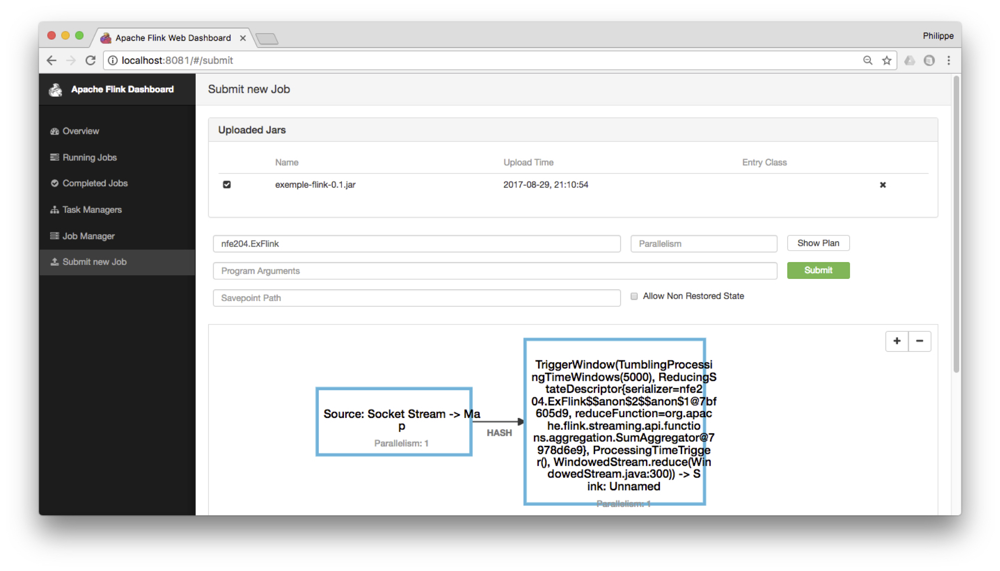
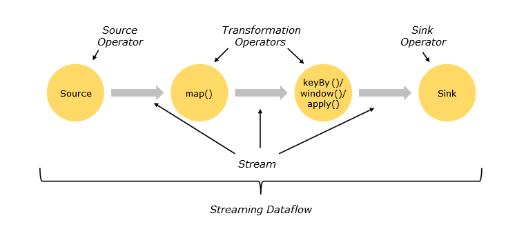
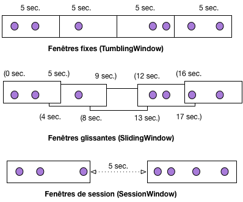
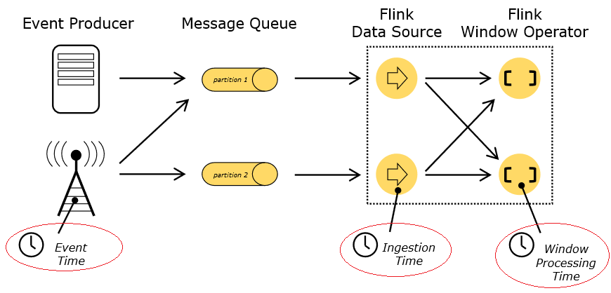

Traitement de flux massifs avec Apache Flink¶
Important
Ce chapitre doit beaucoup à la conribution de Nadia Khelil puisqu’il exploite très largement le rapport NFE204 consacré à Flink en 2017. Un très grand merci à elle!
Dans le traitement batch, les données sont collectées sur une certaine période. Par exemple, des données de capteurs sur une chaine de traitement industriel, des données d’un capteur météo, ou encore des données de logs sur un site internet, collectés sur une journée ou une heure. Ces données sont ensuite stockées dans une base puis traitées comme un ensemble. Cette chaine de traitement traditionnelle introduit une latence entre la récupération des données et leur analyse et fait l’hypothèse implicite que l’ensemble des données à disposition est complet.
Dans de nombreux secteurs, les data scientists ont besoin de traiter de larges flux de données en temps réel pour fournir des résultats quasi immédiats. Nous pouvons citer la détection de fraude, le suivi de titres boursiers, la détection d’anomalies sur les chaines industrielles, le suivi du trafic routier et aérien ou encore les systèmes de recommandation.
Le modèle MapReduce est clairement inadapté pour répondre à ces besoins, et les systèmes de traitement à grande échelle comme Spark ou Flink proposent des technologies de traitements de flux massifs en temps réels. Flink en particulier a nativement été conçu pour le data streaming, et l’application d’opérateurs de fouille de données à des flux. C’est donc ce système qui est présenté dans ce chapitre, et illustré par une application de traitement de messages en temps réel.
Nous allons dans un premier temps, présenter le système dans sa globalité et étudier son anatomie fonctionnelle et son architecture. Cette partie est largement reprise de la documentation officielle de Flink, et vous êtes invités à vous y reporter pour plus de détails: à ce stade du cours vous devez être en mesure d’aborder ce type de documentation et d’en comprendre les aspects techniques, communs à de nombreux systèmes distribués étudiés précédemment.
La seconde partie présente plus en détail l’API de temps réel fournie par Flink et expose les grands principes sur lesquels elle repose.
Enfin, la dernière partie est consacré aux opérateurs de fenêtrage qui sont une spécificité des systèmes de traitement de flux. Nous donnons quelques exemples, à vous de les compléter en effectuant les exercices suggérés.
Les programmes Flink peuvent être écrits en Java, Scala ou Python. Dans le cadre de cette étude, nous avons fait le choix de Scala pour les raisons déjà évoquées dans le chapitre Traitement de données massives avec Apache Spark : Scala est un langage fonctionnel qui se prête très bien à la modélisation de chaînes de traitement dont chaque étape consiste à appeler une fonction.
S1: Apache Flink¶
Supports complémentaires
Flink a pour l’origine le projet Stratosphere, conçu en 2008 par le professeur Volker Marl et ses équipes à l’université de Berlin. Flink est un des projets phares de la fondation Apache depuis fin 2014 (http://flink.apache.org). En allemand, Flink signifie « agile » ou « rapide », comme l’écureuil de son logo.
Flink est un environnement généraliste open source de traitement distribué de données massives. Ce qui le différencie des autres (comme Hadoop MapReduce ou Spark) est : une API de streaming native qui offre des fonctionnalités étendues par rapport au framework MapReduce et ses opérateurs itératifs.
{kind=link}

Fig. 105 Flink dans la chaine de traitement des données¶
La Fig. 105 présente le positionnement de Flink dans la chaîne de traitement des données. Ces dernières sont récupérées à partir d’une base ou d’un flux puis ingérées par les frameworks de traitement (Flink, ou Spark, ou autres) où elles sont traitées et analysées.
Nous avons entre les couches de stockage et de traitement, une couche applicative qui supporte les options de déploiement des systèmes (en local, sur plusieurs serveurs). Au dernier niveau du schéma, nous trouvons une couche de service, représentée par des langages avec un haut niveau d’abstraction comme Pig ou Hive.
Architecture applicative¶
Avant de passer en revue les options de déploiement sur une ou plusieurs machines, étudions les différentes briques qui composent ce système (Fig. 106).
{kind=link}

Fig. 106 Ecosystème Flink¶
Le cœur du système se trouve dans le moteur de traitement (Runtime), celui-ci peut traiter soit des flux de données en streaming grâce au Stream Builder et à la DataStream API, soit des ensembles de données en mode batch avec l’optimiseur de batch et la DataSet API. Ce moteur d’exécution est scalable et distribué, permettant donc le traitement des données massives (streaming ou batch), l’exécution d’opérations itératives, la gestion de la mémoire et l’optimisation des coûts de traitement.
Flink est implanté en Java, mais dispose de wrappers permettant de supporter Scala et Python. Il a aussi un langage de requêtage Flink SQL qui interagit avec l’API Table et offre les mêmes opérateurs que le langage SQL (select, where, …).
À un niveau d’abstraction plus élevé, nous avons différentes briques applicatives (Domaine Specific Language) qui viennent se greffer aux deux blocs primaires (DataStream et DataSet APIs). Notamment les librairies de Machine Learning ML et SAMOA (Machine Learning en streaming), inspirées de scikit-learn et de Spark MLlib, ou d’analyse de graphe (Gelly pour le traitement batch et Dataflow pour le temps réel).
L’API Table est basée sur le modèle relationnel étendu et offre des fonctionnalités qui se rapprochent du Pig ou du SQL avec des opérateurs comme Select, Filter, Co-group. Elle permet par exemple de lire un fichier CSV et de lui appliquer directement des transformations sans avoir à passer par un objet DataStream ou DataSet. Flink possède une mémoire cache permettant de stocker les données pendant le traitement. Elle est notamment utilisée pour les opérateurs à mémoire d’état. Si l’utilisateur souhaite pérenniser ses données dans l’objectif d’une analyse ultérieure, il faut adjoindre à Flink un système de stockage (écriture en fichier texte ou dans une base de données).
De plus, Flink gère de manière autonome sa mémoire interne en utilisant ses propres composants d’extraction et de sérialisation des données. Il optimise aussi le transfert réseau et l’écriture sur disque.
Architecture système¶
Voyons comment Flink fonctionne et se déploie dans une grappe de machines (Fig. 107). Flink fonctionne en mode Maître-esclave. Le maitre, appelé JobManager, planifie les tâches, les distribue aux TaskManagers, suit l’avancement de l’exécution, alloue les ressources et compile les résultats. Les esclaves, appelés donc TaskManagers, exécutent les tâches envoyées par le JobManager et s’échangent parfois des données lors des différentes phases du traitement.
{kind=link}

Fig. 107 Fonctionnement d’un cluster Flink¶
Les opérations à exécuter sont divisées en sous-tâches, en fonction des options de parallélisme par défaut ou spécifiées. Une ou plusieurs instances parallèles d’une opération sont menées dans un Task Slot (littéralement un emplacement de tâche). Le Task Slot représente un espace mémoire isolé dédié à l’exécution d’un ou plusieurs fils de traitements (Threads), voir Fig. 108. Un TaskManager peut avoir un ou plusieurs Task slots. Pour compléter cette architecture, l’utilisateur peut télécharger un client pour communiquer avec Flink et lui soumettre des traitements (par exemple Zeppelin, https://zeppelin.apache.org/).
{kind=link}

Fig. 108 Task slots¶
Flink peut être lancé, pour des tests et expérimentations, en mode standalone; dans ce cas, le système par défaut est composé d’un JobManager et d’un TaskManager qui se partagent les ressources de la même machine.
L’utilisateur peut également ajouter autant de TaskManager que ses ressources le lui permettent, dans ce cas, Flink est lancé en mode cluster local. Cette architecture facilite le développement et le débogage. Flink peut finalement être déployé sur une ou plusieurs machines à distance en utilisant des gestionnaires de ressources distribuées comme Yarn, Mesos ou Docker.
Chaque TaskManager envoie un message (heartbeats) à intervalle régulier et en reçoit du JobManager pour signaler qu’il n’est pas en panne. Si un TaskManager tombe en panne, le JobManager redistribue les tâches entre les TaskManagers opérationnels en reprenant le job à partir du dernier checkpoint complété.
L’inconvénient avec ce type d’architecture est l’unicité du maître qui représente un point de défaillance unique (SPOF), car par défaut, un cluster Flink contient un seul JobManager. Si le JobManager fait défaut, les TaskManagers s’en rendent compte car ils sont déconnectés du JobManager mais il n’y a pas de procédure d’élection d’un nouveau JobManager parmi eux (les TaskManagers restent des esclaves). Pour pallier ce risque, Flink propose une procédure dite de Haute Disponibilité (High Availability). L’idée est d’avoir un JobManager leader et un ou plusieurs JobManagers en attente, prêts à prendre le relais si le leader tombe en panne ou fait défaut. Cette procédure est prise en charge par un framework sous-jacent très utilisé, Zookeeper (http://zookeeper.apache.org). Celui-ci permet de gérer la configuration du système distribué et est intégré à Flink. Zookeeper se charge de désigner parmi les JobManagers en standby celui qui dirigera le cluster et lui fournira le dernier checkpoint complété.
Tolérance aux pannes¶
L’une des forces de Flink est son mécanisme de Checkpointing. Ce mécanisme consiste à faire des instantanés (snapshots) automatiques et asynchrones de l’état de l’application et de la position dans le flux à intervalles réguliers. Ceci permet d’avoir la garantie que chaque donnée est traitée exactement une fois (Exactly-once processing delivery guarantee) avec un faible impact sur les performances.
En cas de panne ou de défaillance, un programme Flink avec des checkpoints activés[#]_, reprendra le traitement à partir du dernier checkpoint, assurant que Flink maintient l’unicité des traitements. Le mécanisme de checkpoint peut être étendu à l’écriture et lecture à partir d’une base également.
Flink permet à l’utilisateur de déclencher manuellement des checkpoints, ceux-ci sont alors appelés savepoints (points de sauvegarde) et permettent par exemple d’arrêter le programme et de reprendre à partir de l’état sauvegardé ou de redémarrer l’application avec un parallélisme différent pour s’adapter aux changements de vitesse et de masse du flux.
Il également possible dans le cadre de la reprise sur panne de définir la stratégie de redémarrage. Flink applique une stratégie de redémarrage par défaut lorsque le checkpointing est activé. Si le programme inclut une stratégie de redémarrage spécifique, celle-ci remplace la stratégie par défaut (Ex. un nombre max de tentatives de 2 avec un temps d’attente de 5 secondes entre chaque relance).
Prise en mains de Flink¶
Nous allons reprendre un exemple de la documentation Flink pour faire connaissance avec ce système.
Installation et lancement¶
Flink peut s’installer avec Docker, mais comme nous avons besoin de plusieurs scripts et clients (dont l’interface en ligne de commande), il est sans doute plus direct de récupérer directement l’ensemble du logiciel.
Flink peut se télécharger depuis http://flink.apache.org/downloads.html, et plusieurs versions sont proposées en association avec Hadoop et Scala. Choisissez une version binaire, n’importe laquelle: à ce stade nous n’avons pas besoin de Hadoop et la version de Scala ne compte pas vraiment non plus.
Installez Flink dans un répertoire quelconque et ajoutez le sous-répertoire bin
dans le chemin d’accès à vos exécutables. Par exemple, sous Linux ou Mac OS X,
cela donne les commandes suivantes:
cd ~/Downloads
tar xzf flink-*.tgz
cd flink-1.3.2
export PATH=$PATH:/users/philippe/flink-1.3.2/bin
Et vous pouvez alors lancer un serveur Flink en local avec la commande:
start-cluster.sh
Le serveur fournit une interface Web à l’adresse http://localhost:8081, comme le montre la Fig. 109.
{kind=link}

Fig. 109 Le tableau de bord de Flink¶
Nous sommes prêts à effectuer nos premières manipulations avec Flink. Pour lancer et suivre l’avancement des programmes ou pour modifier les paramètres de l’architecture système, il existe plusieurs moyens :
La Command-Line Interface (CLI) : permet de lancer des jobs en ligne de commande.
Le Client Web Interface (port 8081) : permet de soumettre des jobs, d’inspecter les plans d’exécution et de les exécuter, de débugger les plans d’exécution, d’avoir avoir une vision globale du cluster. Zeppelin Notebook, par exemple, offre une interface web interactive de visualisation et d’exploration des données (https://zeppelin.apache.org/).
la JobManager Web Interface (port 8081) permet de suivre la progression du traitement, d’avoir une vision globale du statut du système, de consulter le détail de l’exécution des jobs et l’évolution de l’utilisation des ressources par les TaskManagers, et éventuellement savoir pourquoi un job a échoué et situer quelle tâche parallèle a causé le problème.
enfin l”Interactive Scala Shell permet de lancer des requêtes, d’explorer les données, de modifier les paramètres du système. Elle offre un accès complet à l’API Scala.
La ligne de commande Scala est très pratique pour tester rapidement des opérateurs et des workflows, qui peuvent ensuite être intégrés dans des programmes complets au Job Manager via l’interface Web. Cette dernière offre de nombreuses visualisations pour suivre l’avancement des traitements et avoir une vision globale du cluster.
Vous pouvez arrêter le serveur.
stop-cluster.sh
Quelques commandes interactives¶
Flink est un moteur de traitement distribué, et propose les opérateurs typiques de ces environnements. Nous les avons exploré avec Pig, avec Spark, et nous les retrouvons ici. Avant d’en donner la liste, voici quelques exemples qui devraient se passer d’explication, exécutés avec l’utilitaire de commandes interactif.
Placez-vous dans le répertoire contenant le fichier bien connu author-small.txt (ou n’importe
quel autre fichier qui a votre préférence), et entrez:
start-scala-shell.sh local
Vous devriez obtenir un prompt Scala-Flink. Voici quelques commandes à tester
(note: la variable Scala prédéfinie benv désigne l’environnement de traitements batch).
val data = benv.readTextFile("author-small.txt")
data.print
data.count
data.filter(_.contains("1989"))
data.filter(_.contains("1989")).count()
data.filter(_.contains("1989")).print()
data.filter(_.contains("1989")).map(_.toUpperCase).print()
Notez bien que, comme Pig ou Spark, la construction d’un workflow n’implique
pas son exécution immédiate, qui est déclenchée quand on la demande directement par run() ou,
ici, indirectement par print(). Exemple:
val data = benv.readTextFile("author-small.txt")
var workflow = data.filter(_.contains("1989")).map(_.toUpperCase)
// A ce stade, rien n'est exécuté mais la commande suivante déclenche le calcul
workflow.print()
Un programme de suivi de flux¶
Nous allons nous concentrer sur la gestion de flux avec Flink. Nous allons utiliser un programme qui simule un flux de données à la demande, en transmettant des données sur un port réseau. Ce programme Python est disponible sur notre site à l’adresse http://b3d.bdpedia.fr/files/SimFlux.py. Il vous faut bien entendu un environnement Python (version 3: je n’ai pas testé le programme avec la version 2).
Entrez alors la commande:
python3 SimFlux.py
Vous devriez obtenir le message:
J'attends une connexion sur localhost:9000...
Le programme a ouvert un accès (une socket) sur le port 9000 de la machine locale
et attend des connexions. Des options permettent de modifier le port ou la machine
si nécessaire: entrez python3 SimFlux.py -h pour des détails. Vous êtes d’ailleurs
invités à regarder le code et à le modifier si cela vous arrange.
Notre programme joue le rôle d’un serveur de flux. Dès qu’un « client » se connecte, des données
sont envoyées, à un rythme variable. Dans son mode par défaut, il transmet
simplement des entiers générés aléatoirement.
Pour le
vérifier, nous pouvons lancer une application comme telnet sur ce même port.
Dans une autre fenêtre, entrez:
telnet localhost 9000
telnet joue le rôle du client: vous devriez constater qu’il reçoit des données
(des entiers, donc) à un rythme assez lent.
En d’autres termes, nous avons établi une connexion réseau pour envoyer des données, via le port 9000,
depuis le « producteur » SimFlux vers le consommateur telnet. Ce dernier ne fait pas
grand chose mais nous allons le remplacer par Flink pour traiter les données reçues. Le moment
venu, nous remplacerons notre générateur de flux par un véritable serveur de streaming.
SimFlux.py peut également produire deux autres types de données
avec l’option source. Tout d’abord, si on lui indique un fichier (texte),
les lignes du fichier sont transmises une à une (et on revient au début du fichier
après la dernière ligne). Le format est le suivant:
python3 SimFlux.py --source /chemin_vers/un_fichier.txt
Ensuite, si on lui indique un répertoire, les fichiers du répertoire seront transmis un à un.
Pour envoyer par exemple les films codés en JSON, un par un, dézippez le
fichier movies-json.zip quelque part et lancez la commnde:
python3 SimFlux.py --source /quelque_part/movies-json
Testons maintenant Flink pour traiter le flux des entiers. Lancez à nouveau le générateur de flux en mode par défaut:
python3 SimFlux.py
Puis, l’interpéteur scala en ligne de commande:
start-scala-shell.sh local
Entrez maintenant les instructions suivantes:
// Déclaration du flux de données. NB: senv est l'environnement de streaming
val stream = senv.socketTextStream("localhost", 9000, '\n')
// À chaque entier en entrée, on ajoute 2 (pourquoi pas)
val w = stream.map ({ x => x.toInt + 2 } )
// Voyons ce que cela donne
w.print()
// Workflow défini: on l'exécute
senv.execute("Mon premier traitement de flux ")
Notre flux de données est capté par ce traitement consistant simplement à ajouter 2 à l’entier reçu. C’est notre premier traitement.
Note
Un CTRL-C dans la fenêtre de SimFlux.py permet d’interrompre le flulx courant.
Déploiement¶
L’utilitaire de commande Scala est pratique pour tester un traitement, mais pour une mise en production, il faut créer un package contenant le programme à exécuter et ses dépendances. Cela suppose un environnement de developpement assez complet, basé sur l’utilitaire Maven. Des instructions sont données ici:
Pour vous faciliter la tâche (dans un premier temps du moins), nous vous fournissons un package prêt au déploiement. Voici le programme à déployer, avec le même workflow que celui déjà testé en ligne de commande.
package nfe204
/**
Exemple de programme Flink - Cours NFE204: http://b3d.bdpedia.fr
*/
import org.apache.flink.streaming.api.scala._
import org.apache.flink.streaming.api.windowing.time.Time;
object ExFlink {
def main(args: Array[String]) : Unit = {
// Environnement de streaming
val env: StreamExecutionEnvironment = StreamExecutionEnvironment.getExecutionEnvironment
// Connexion a la socket localhost:9000
val stream = env.socketTextStream("localhost", 9000, '\n')
// Workflow
val w = stream.stream.map { x => x.toInt + 2 }
// Affichage sur la sortie standard
w.print()
env.execute("Exemplede programme Flink - NFE204")
}
}
Récupérer le fichier flinknfe204.zip dont le lien est donné en début de session. Une fois décompressé,
vous pouvez:
soit utiliser directement le package
exemple-flink.jarqui se trouve dans le répertoiretargetsoit tenter de recompiler le code source (qui se trouve dans
src) avec la commandemvn package; il faut disposer de Maven (https://maven.apache.org) sur votre machine
Une fois que vous disposez du fichier jar, vous pouvez le transmettre au serveur Flink grâce à l’interface
web. Choisissez Submit new job et envoyez le fichier jar. En cliquant ensuite sur ce fichier et
en entrant le nom du programme (nfe204.ExFlink) vous verrez l’affichage du workflow,
comme sur la Fig. 110.
{kind=link}

Fig. 110 Déploiement avec l’interface Flink¶
Il ne reste plus qu’à exécuter le job avec le bouton Submit (bien entendu il faut démarrer
notre serveur de flux au préalable). Vous pouvez inspecter le tableau de bord de Flink
qui vous montre les jobs en cours d’exécution. Si le serveur était en production avec de nombreux
esclaves, le jar serait transmis à chacun et l’interface permettrait de visualiser l’ensemble des tâches
parallèles.
Dans le menu Job manager, vous pouvez consulter la sortie stdout qui devrait montrer
le résultat du traitement de nos flux.
Et voilà pour cette prise en main. Vous pouvez arrêter le serveur Flink.
stop-local.sh
S2: l’API de streaming Flink¶
Supports complémentaires
Vidéo sur la gestion de flux: <https://mediaserver.lecnam.net/lti/v1261a0df6ad8zf8glx2/>`_
Nous allons à présent étudier plus en détails (mais pas intégralement quand même) le fonctionnement de l’API DataStream. Cette session se concentre sur le gestion de flux non limités, la prochaine session étudiera la notion de fenêtre qui permet de discrétiser un flux.
Vous êtes fortement invités à vous munir de votre installation de Flink et de notre générateur de flux pour tester les exemples donnés.
Modèle de données et de programmation¶
Les éléments de base d’un programme Flink sont les streams (flux) constitués d”items (éléments) et les transformations. Conceptuellement, un stream est un flux de données non borné. Une transformation est une opération qui prend en entrée un ou plusieurs flux et qui produit un ou plusieurs flux en sortie.
Flink est totalement agnostique sur la nature des éléments. C’est à l’application de connaître la structure des éléments reçus et de les manipuler en conséquence. Pour certaines opérations (regroupements), il est cependant parfois nécessaire de choisir ou de créer une clé. On peut le faire à partir des champs d’un élément quand ce dernier est un document structuré, ou plus généralement par application d’une fonction. La clé peut donc être un champ, une concaténation de plusieurs champs ou le résultat d’une fonction appliquée à un champ. Pour des données de log sur un site marchand par exemple, on peut définir comme clé l’identifiant de connexion, si on souhaite effectuer des regroupements par client.
La Fig. 111 représente un workflow (ou dataflow dans une terminologie centrée sur les données) de Flink. Il débute par l’ingestion d’éléments provenant d’une ou plusieurs sources de données (par exemple une API délivrant des données en continu, ou un gestionnaire de distribution de messages comme RabbitMQ ou Kafka), sur lesquelles s’opèrent des transformations (filtrage et attribution de clé, regroupement par clé, application de fonctions définies par l’utilisateur) et s’achève par un ou plusieurs sinks (par exemple, affichage ou écriture sur disque).
{kind=link}

Fig. 111 Dataflow Flink (d’après la documentation)¶
Les transformations¶
Les opérateurs de transformation modifient un ou plusieurs flux de type générique DataStream, type qui peut être raffiné en KeyedDataStream quand une clé a été définie. Un traitement peut combiner plusieurs transformations successives. Voici les principales transformations disponibles.
Transformation |
Description |
|---|---|
Map |
Applique une transformation définie par l’utilisateur à chaque élément du flux et produit exactement un élément. |
FlatMap |
Prend un élément du flux et produit zéro, un ou plusieurs éléments. |
Filter |
Filtre les éléments d’un flux en fonction d’une ou plusieurs conditions. |
KeyBy |
Attribue une clé aux éléments d’un flux, ce qui revient à la partitionner en fragments partageant la même clé. Le flux sortant est de type KeyedDataStream. |
Reduce |
Applique une réduction sur un KeyedDataStream en combinant le nouvel élément du flux au dernier résultat de la réduction. |
Fold |
Applique une réduction sur un KeyedDataStream en combinant le nouvel élément du flux à un accumulateur dont la valeur initiale est fournie. |
Aggregations |
Fonctions prédéfinies |
Union |
Union de deux flux ou plus, incluant tous les champs de tous les flux (ne supprime pas les doublons). |
Connect |
Connecte deux flux indépendamment de leur type, permettant d’avoir un état partagé. |
Split |
Partitionne le flux selon des critères. |
Select |
Sélectionne un ou plusieurs éléments d’un flux partitionné. |
Extract Timestamps |
Extrait l’horodatage d’un stream. |
Dans Flink, l’affichage ou l’écriture s’effectuent via l’opérateur Sink. Le DataSink ingère des DataStreams et les transmet à des fichiers, sockets (interfaces de connexion), systèmes externes (de visualisation ou de stockage) ou les imprime sur la console. En voici quelques-uns :
Sink |
Description |
|---|---|
writeAsText |
Transforme les éléments en texte en utilisant la méthode toString() |
writeAsCsv |
Ecrit les éléments dans un fichier csv. Les délimiteurs de champs et de ligne sont paramétrables. |
print / printToErr |
Imprime les éléments sur la console. |
writeUsingOutputFormat / FileOutputFormat |
Permet d’écrire avec un format défini par l’utilisateur. |
addSink |
Permet d’ajouter un connecteur défini par l’utilisateur en dehors des fonctions sink existantes. |
Les méthodes write citées plus haut sont principalement destinées au débogage, elles ne participent pas au processus de reprise sur panne. Pour assurer la fiabilité de l’écriture unique des flux, il est préférable de passer par des gestionnaires de données robuste (ElasticSearch, Cassandra, Kafka et tous ceux que vous pouvez maintenant explorer dans la galaxie NoSQL).
Quelques exemples¶
Pour bien comprendre, le plus simple est d’expérimenter. Vous avez notre programme de génération de flux, déjà utilisé dans la session précédente. Il tient lieu de data source en attendant mieux. Le data sink est simplement l’affichage à l’écran du flux résultat. Nous utilisons la fenêtre interactive Scala pour tester des expressions, intégrées à un script dont la forme générale est la suivante:
// Déclaration du flux de données. NB: senv est l'environnement de streaming
val stream = senv.socketTextStream("localhost", 9000, '\n')
// Les ... ci-dessous désignent l'emplacement des opérateurs à évaluer
val w = stream.(...)
// Data sink = affichage
w.print()
// Workflow défini: on l'exécute
senv.execute("Je lance mon traitement de flux ")
Notre générateur de flux produit des entiers dans son mode par défaut. Commençons par les transformer en flux de tuple Scala pour avoir des données plus structurées (des documents, pour renvoyer au premier chapitre de ce cours). Vous êtes invités à tester l’expression suivante.
val w = stream.map ( { x => Tuple1(x.toInt) } )
On obtient l’affichage des entiers reçus, inclus dans un tuple.
(7672)
(7479)
(5745)
(8310)
...
Flink traite donc chaque élément dès qu’il est reçu: un gestionnaire de flux vise à une latence minimale, contrairement aux traitements batch massifs comme Hadoop/MapReduce.
Note
Pour interrompre un DataFlow, il faut que la connexion au flux soit coupée. Vous pouvez interrompre la connexion en entrant CTRL-C dans notre générateur de flux. Il se mettra automatiquement en attente d’une nouvelle connexion.
On crée un flux de tuple avec un seul champ, converti au type Int. On peut apppliquer à ce flux d’autres transformations. Par exemple créer un autre tuple avec la valeur comme premier champ, et le double de la valeur comme second champ. Ce qui donne:
val w2 = w.map( {y => (y._1, y._1 * 2) } )
w2.print()
Note
La syntaxe Scala y._1 désigne le premier champ du tuple y.
Cela donne un flux de paires d’entiers.
(5563,11126)
(1219,2438)
(465,930)
..
Bien entendu, on peut chaîner toutes les transformations, ce qui revient à tout écrire en une séquence d’instructions:
stream.map ( { x => Tuple1(x.toInt) } )
.map( {y => (y._1, y._1 * 2) } )
.print()
Important
Si vous voulez entrer des instructions multi-lignes dans l’interpréteur Scala, utilisez
la commande :paste, suivi de vos instructions, et CTRL D pour finir.
Le fait d’engendrer des tuples, dans lesquels les champs ne sont
pas nommés, finit par donner un code un peu ésotérique. On peut choisir
pour plus de clarté de définir les types des résultats intermédiaires.
Voici un exemple complet dans lequel on a défini un type MonDouble
permettant de représenter un réel et son double
(si on réfléchit un peu, le fait qu’un réel puisse avoir un double soulève quelques
questions métaphysiques; lecture recommandée: https://fr.wikipedia.org/wiki/Le_R%C3%A9el_et_son_double).
case class MonDouble(leReel: Float, sonDouble: Double)
val stream = senv.socketTextStream("localhost", 9000, '\n')
val w = stream.map ( { x => Tuple1(x.toFloat) } ).map( {y => MonDouble(y._1, y._1 * 2) } )
val fluxFiltre = w.filter ({_.leReel > 1000})
fluxFiltre.print()
senv.execute("Mon premier traitement de flux ")
Note
Une case class en Scala est une classe d’objets non modifiables pour laquelle (entre autres) il n’est pas
nécessaire de définir un constructeur.
Ce programme produit donc un flux d’objets de la classe MonDouble. Notez qu’on a ajouté
un filtre pour ne conserver que les objets dont le champ leReel est supérieur à 1000.
À ce stade, faites une pause et vérifiez que vous comprenez bien ce que nous sommes en train de faire. Nous définissons des chaînes de traitements par des opérateurs Flink qui prennent comme argument des fonctions Scala à appliquer à chaque élément du flux. Ces opérateurs sont des opérateurs de second ordre (relisez le chapitre Calcul distribué: Hadoop et MapReduce si vous avez déjà oublié).
Contrairement à ce qui se passe dans un environnement comme, disons, MapReduce/Hadoop, il n’y a pas de matérialisation des résultats intermédiaires, mais une sorte de tuyauterie qui transfère en continu les données d’un opérateur à un autre. En d’autres termes, le jeu de données n’est pas soumis en totalité au premier opérateur, lequel stocke complètement son résultat sur disque avant de le fournir comme entrée au second opérateur, et ainsi de suite. Au contraire, dans l’optique du traitement de flux, chaque document passe sans interruption dans la chaîne de traitement, et la latence pour obtenir le résultat est minimale. C’est assez évident quand on exécute nos petits scripts
Attention
Si ce n’est pas clair, il faut approfondir, sinon ce qui suit restera définitivement du côté obscur.
Passons à la suite. Le flatMap
produit plusieurs éléments pour chaque élément traité. L’exemple
typique est celui d’une ligne que l’on décompose en mots. Lancez
notre générateur de flux en mode « lignes de fichier texte » (voir ci-dessus)
et exécutez le script suivant.
val stream = senv.socketTextStream("localhost", 9000, '\n')
val w = stream.flatMap ({ str => str.split("\\W+") }).print()
senv.execute("Je découpe en mots")
On obtient les mots du document texte. Par exemple, à partir du fichier webdam-book.txt:
Vianu
2010
Web
Data
Management
Abiteboul
2010
Web
Data
...
Pour reprendre l’exemple du compteur de mots que nous avons déjà étudié à plusieurs reprises avec MapReduce, voici son expression sur un flux avec Flink.
case class CompteurMot(mot: String, compteur: Int)
val stream = senv.socketTextStream("localhost", 9000, '\n')
val w = stream.flatMap ({ str => str.split("\\W+") })
.map({ CompteurMot(_, 1) })
.keyBy("mot")
.sum("compteur")
.print()
senv.execute("Le compteur de mots")
À chaque fois qu’une nouvelle ligne est reçue, elle est soumise au Dataflow qui cumule dans les fragments correspondant à chaque mot le nombre d’occurrences reçues jusqu’ici. On voit donc défiler l’incrémentation successive des compteurs:
CompteurMot(2010,5)
CompteurMot(Web,5)
CompteurMot(Data,5)
CompteurMot(Management,5)
CompteurMot(Senellart,1)
CompteurMot(1995,3)
CompteurMot(Fundations,3)
Il faut bien être conscient qu’un flux est en théorie infini, et qu’on ne dispose donc à aucun moment d’un état stable et final d’un groupe sur lequel on pourrait appliquer un calcul définitif. Si je veux calculer une moyenne glissante par exemple, je dois garder à la fois la somme des valeurs collectées jusqu’à présent, et le nombre de valeurs rencontrées. Cette moyenne évolue à chaque nouvel élément par combinaison de la valeur accumulée jusqu’ici et du nouvel élément.
Quelle est alors la signification de l’opérateur Reduce sur un flux? Une fonction de Reduce dans Flink consiste à définir comment combiner deux éléments, dont l’un représente l’accumulation des éléments rencontrés dans le passé.
Note
Il existe une variante de Reduce, Fold, où l’accumulateur est d’un type différent des éléments du flux. La valeur initiale de cet accumulateur doit alors être fournie. Un exemple sera donné plus loin.
Voici un script illustrant l’opérateur de Reduce. Une première
variable, mots, partitionne le flux en fragments correspondant chacun
à un mot. Chaque fragment contient toutes les occurrences rencontrées:
case class CompteurMot(mot: String, compteur: Int)
val stream = senv.socketTextStream("localhost", 9000, '\n')
val mots = stream.flatMap ({ str => str.split("\\W+") }).map({ CompteurMot(_, 1) }).keyBy("mot")
mots.print()
senv.execute("Le compteur de mots")
Vous pouvez déjà tester ce premier script pour obtenir le résultat concret
du flux des mots et de leur compteur. En l’appliquant à un flux
fourni depuis le fichier webdam-book.txt par exemple, voici
ce que l’on obtient.
...
CompteurMot(Management,1)
CompteurMot(Abiteboul,1)
CompteurMot(2010,1)
CompteurMot(Web,1)
CompteurMot(Data,1)
CompteurMot(Management,1)
CompteurMot(Manolescu,1)
CompteurMot(2010,1)
..
Le reduce va compter le nombre d’occurrences de chaque fragment. La fonction
prend en entrée une paire constituée de l’accumulateur (acc) et d’une nouvelle
occurrence (occ), et produit un nouveau CompteurMot avec incrémentation.
case class CompteurMot(mot: String, compteur: Int)
val stream = senv.socketTextStream("localhost", 9000, '\n')
val mots = stream.flatMap ({ str => str.split("\\W+") }).map({ CompteurMot(_, 1) }).keyBy("mot")
val compte = mots.reduce( (acc, occ) => {CompteurMot (acc.mot, acc.compteur + 1) }).print()
senv.execute("Le compteur de mots")
Cette fois on obtient un flux de compteurs dont la valeur augmente au fur et à mesure.
...
CompteurMot(2010,7)
CompteurMot(Web,7)
CompteurMot(Data,7)
CompteurMot(Management,7)
CompteurMot(Manolescu,2)
CompteurMot(2010,8)
...
Ces exemples doivent vous permettre de comprendre les caractéristiques essentielles d’un traitement de flux. À vous d’aller plus loin en explorant les autres opérateurs. Rien ne vous empêche par exemple de lancer deux générateurs de flux et de les combiner. Les exercices ci-dessous sont des variantes des exemples que nous avons déjà donnés.
Exercices¶
Le premier exercice consiste, si ce n’est pas encore fait, à tester les transformations précédentes.
Exercice Ex-S2-1: mise en œuvre
Exécutez les dataflows précédents sur notre flux d’entier.
Pour les exercices suivants, nous allons nous appuyer sur un flux de documents JSON, provenant de nos fichiers de films extraits de movies.zip. Vous devez donc lancer le générateur de flux comme suit:
python3 SimFlux.py --source <le-chemin-vers-les-fichiers-json>
Il va falloir décoder les flux JSON en Scala. Heureusement nous avons fait en partie ce travail pour vous. Voici les classes Scala représentant les artistes et les films.
case class Artiste(nom: String, prenom: String, annee_naissance: Double)
case class Film(titre: String,
resume: String,
annee: Double,
genre: String,
pays: String,
realisateur: Artiste,
acteurs: List[Artiste])
Et voici la fonction (presque complète) qui instancie un objet Film
à partir d’un encodage en JSON.
def parseFilm (jsonString: String) : Film = {
import scala.util.parsing.json.JSON
// On parse
val jsonMap = JSON.parseFull(jsonString).getOrElse("").asInstanceOf[Map[String, Any]]
// On extrait
val titre = jsonMap.get("title").get.asInstanceOf[String]
val resume = jsonMap.get("summary").get.asInstanceOf[String]
val annee = jsonMap.get("year").get.asInstanceOf[Double]
val genre = jsonMap.get("genre").get.asInstanceOf[String]
val pays = jsonMap.get("country").get.asInstanceOf[String]
// Le metteur en scène
val director_json = jsonMap.get("director").get.asInstanceOf[Map[String, Any]]
val nom = director_json.get("last_name").get.asInstanceOf[String]
val prenom = director_json.get("first_name").get.asInstanceOf[String]
val director = Artiste (nom, prenom, 0)
// Et voici le film
return Film(titre, resume, annee, genre, pays, director, List())
}
Il faut compiler ces définitions dans l’interpréteur Scala avant de traiter les flux de documents JSON. Vous pouvez compléter cette fonction pour extraire également les acteurs si vous avez de l’appétit en programmation Scala.
Exercice Ex-S2-2: flux de données JSON
Définissez et exécutez les transformations suivantes sur le flux des films codés en JSON.
Appliquez simplement notre fonction et affichez le titre du film
Appliquez le décompte continu des mots sur le résumé des films
Créez une classe
CompteurFilm, groupez les films par réalisateur, et affichez en continu le nombre de films réalisés par chaque réalisateur.Ne prenez en compte que les drames, groupez-les par année, et affichez, pour chaque année, la liste des films. Pour créer la liste, vous pouvez soit définir une classe Scala adéquate, soit simplement (!) concaténer les titres des films dans une chaine de caractères.
Exercice Ex-S2-3: parallélisme ou pas parallélisme?
Un dataflow Flink est-il toujours entièrement parallélisable? Posez-vous la question en reprenant nos exemples ou ceux des exercices précédents. Vous pouvez approfondir la question en lisant la documentation Flink à ce sujet.
S3: Le fenêtrage¶
Supports complémentaires
Vidéo sur le fenêtrage de flux: <https://mediaserver.lecnam.net/lti/v1261a0df6c1filb7dw2/>`_
Un flux est théoriquement infini, et il n’est donc possible en principe que d’obtenir des résultats transitoires (par exemple le décompte des mots, qui change à chaque document reçu). Il est, en revanche, possible de le faire sur des parties du flux appelées des fenêtres ou windows (par exemple, une moyenne sur les 50 derniers éléments ou un la valeur maximale des éléments sur la dernière heure).
Important
La présentation qui suit est évidemment restreinte à l’essentiel. Vous trouverez beaucoup plus de détails dans la documentation Flink.
Les fenêtres s’appliquent soit à des flux dotés d’une clé (KeyeddataStream) soit à des flux « bruts », sans clé, mais dans ce dernier cas il n’y a pas de parallélisation possible.
Définition d’une fenêtre¶
Plusieurs méthodes sont proposées pour définir une fenêtre. Elles peuvent être délimitées par le temps (par exemple une fenêtre de 5 minutes) ou par les données (tous les 3 éléments). Par ailleurs, les fenêtres peuvent être exclusives (TumblingWindow, sans chevauchement), glissantes (SlidingWindow, avec chevauchement) ou par sessions (avec des périodes d’inactivité). Pour le dernier cas, il suffit par exemple d’imaginer que la session est composée des clics d’un client sur un site marchand lorsque celui-ci est connecté et que les périodes d’inactivités sont composées des moments où le client est hors connexion. Ces options autorisent une grande flexibilité de programmation.
La Fig. 112 montre les principaux types de fenêtres prédéfinis, et leur couverture d’un même flux de données. La fenêtre fixe couvre 5 secondes et démarre toutes les 5 secondes. La fenêtre glissante couvre 5 secondes et démarre toutes les 4 secondes. L’utilisateur reçoit donc toutes les 4 secondes une fenêtre contenant les éléments des 5 dernières secondes. On peut noter que certains éléments appartiennent à deux fenêtres.
{kind=link}

Fig. 112 Fenêtres sur flux¶
Le dernier type de fenêtre est défini par l’intervalle de temps entre deux éléments (ce qui définit l’arrêt d’une session et le début d’une nouvelle).
Dans Flink, un événement peut avoir trois étiquettes de temps différentes :
Le moment de création de l’événement (estampille de l’événement ou Event Time), fourni par le producteur du flux sous la forme d’un champ timestamp dans l’élément.
Le temps d’ingestion : correspond au moment où l’élément est inséré dans le dataflow de Flink.
Le temps de traitement : correspond au moment où chaque opérateur applique un traitement à l’élément.
{kind=link}

Fig. 113 Horodatage des éléments¶
Le fenêtrage utilisant l’estampille nécessite un moyen de mesurer la progression de cet horodatage. Par exemple, un windowing qui construit des fenêtres horaires a besoin que le programme lui signale que l’estampillage a dépassé la fin d’une heure et qu’il peut clôturer la fenêtre en cours. Flink permet de suivre cette progression à l’aide de marqueurs en filigrane (watermarks). Ces marqueurs sont des streams virtuels intégrés au flux et portent un horodatage marquant la fin d’une fenêtre ; ils signalent à Flink qu’il peut lancer le traitement sur cette fenêtre.
Il est possible que certains éléments arrivent après le marqueur temporel. De plus, lors d’un calcul en temps réel, l’utilisateur n’est jamais certain que tous les événements liés à une fenêtre sont entrés dans le système. Flink donne la possibilité de fixer un facteur de retard (marqueurs en filigrane). L’utilisateur doit définir un facteur de retard raisonnable au vu de la latence induite par ce report.
Opérations sur les fenêtres¶
Il reste à définir les opérations à appliquer aux éléments contenus dans une fenêtre. Flink propose trois options:
application incrémentale d’une fonction Reduce dont la définition consiste simplement à indiquer comment on combine deux éléments de la fenêtre.
application incrémentale d’une fonction Fold dont la définition consiste simplement à indiquer comment on combine un élément de la fenêtre avec un accumulateur dont la valeur initiale est fournie.
enfin, toute fonction s’appliquant à l’ensemble des éléments de la fenêtre, et qui ne peut pas s’appliquer incrémentalement.
La troisième option est la plus générale, mais elle a un gros inconvénient: il faut attendre que la fenêtre soit intégralement constituée pour appliquer la fonction, ce qui implique de conserver tous les éléments dans toutes les fenêtres actives. Les deux premières options n’ont pas besoin de conserver les éléments puisque la nature de l’opération impliquée permet de ne conserver que le résultat qui évolue incrémentalement à chaque élément reçu.
Quelques exemples¶
Passons aux exemples, en commençant par un flux d’entiers engendré par SimFlux. Pour commencer, nous définissons une fenêtre avec windowall(), ce qui revient à empêcher tout parallélisme. L’exemple suivant produit une fenêtre toutes les 5 secondes, et accumule dans une chaîne de caractères les entiers reçus.
import org.apache.flink.streaming.api.windowing.assigners._;
val stream = senv.socketTextStream("localhost", 9000, '\n')
val w = stream.map ( { x => Tuple1(x.toInt) } )
.windowAll(TumblingProcessingTimeWindows.of(Time.seconds(5)))
.fold("Liste: ") { (acc, v) => acc + " | " + v }
.print()
senv.execute(" ")
Le fenêtrage précédent implique qu’un élément est dans une fenêtre et une seule. En revanche, les fenêtres glissantes peuvent partager certains éléments car leur périodicité et leur durée sont définies séparément. L’exemple suivant montre une fenêtre glissante couvrant 10 secondes, émise toutes les 5 secondes.
import org.apache.flink.streaming.api.windowing.assigners._;
val stream = senv.socketTextStream("localhost", 9000, '\n')
val w = stream.map ( { x => Tuple1(x.toInt) } )
.windowAll(SlidingProcessingTimeWindows.of(Time.seconds(10), Time.seconds(5)))
.fold("Liste: ") { (acc, v) => acc + " | " + v }
.print()
senv.execute(" ")
Vous pouvez vérifier en exécutant ce dataflow que les éléments sont repris d’une fenêtre à l’autre. Le résultat ressemble à celui-ci.
Liste: | 2393 | 627 | 3915
Liste: | 2393 | 627 | 3915 | 5540 | 2782
Liste: | 5540 | 2782 | 868 | 8052
Liste: | 868 | 8052 | 3648 | 5871 | 7994 | 9517 | 9066
...
Pour permettre un certain degré de parallélisme, il faut définir une clé de partitionnement.
On peut alors utiliser l’opérateur de fenêtrage window().
L’exemple suivant partitionne le flux d’entiers en 2: les pairs et les impairs. La
clé de partitionnement est la valeur de l’entier modulo 2 (x % 2 en Scala).
À l’affichage, on obtient la liste des entiers pairs, et celle des entiers impairs.
import org.apache.flink.streaming.api.windowing.assigners._;
val stream = senv.socketTextStream("localhost", 9000, '\n')
case class MonEntier (classe: Int, valeur: Int)
val w = stream.map ( { x => x.toInt } ).map({ x => MonEntier (x % 2, x)} )
.keyBy("classe")
.window(TumblingProcessingTimeWindows.of(Time.seconds(5)))
.fold("Liste: ") { (acc, v) => acc + " | " + v.valeur }
.print()
senv.execute(" ")
Le niveau de parallélisme autorisé par ce fenêtrage n’est que de deux. D’une manière générale, dès qu’un regroupement intervient, le nombre de groupes est le facteur limitant le parallélisme pour cet opérateur.
Il ne vous reste plus qu’à effectuer quelques exercices pour maîtriser l’essentiel des opérateurs de gestion de flux.
Exercices¶
Exercice Ex-S3-1: mise en œuvre
Exécutez les exemples de fenêtrage, adaptez-les pour effectuer la somme des entiers reçu pendant chaque fenêtre.
Exercice Ex-S3-2: classer les films
Partitionnez le flux des films en fonction du genre. Affichez avec chaque genre la liste des titres.
Exercice Ex-S3-3: alerte sur les réalisateurs
Détectez les réalisateurs trop productifs: votre dataflow doit trouver les réalisateurs qui ont publié 2 films en moins de 20 secondes, et les afficher.
Dans un contexte plus réaliste, ce genre de dataflow permet de lever des alertes quand des événements hors du commun surviennent, par exemple des changements de température soudains dans des flux provenant de capteurs.

Ce cours de Philippe Rigaux est mis à disposition selon les termes de la licence Creative Commons Attribution - Pas d’Utilisation Commerciale - Partage dans les Mêmes Conditions 4.0 International.
Table Of Contents
- Introduction
- Préliminaires: Docker
- Modélisation de bases NoSQL
- Interrogation de bases NoSQL
- MapReduce, premiers pas
- Cassandra - Travaux Pratiques
- MongoDB - Travaux Pratiques
- Introduction à la recherche d’information
- Recherche d’information : l’indexation
- Recherche avec classement
- Recherche d’information - TP ElasticSearch
- Recherche d’information - TP ElasticSearch : pertinence
- Le cloud, une nouvelle machine de calcul
- Systèmes NoSQL: la réplication
- Systèmes NoSQL: le partitionnement
- Calcul distribué: Hadoop et MapReduce
- Traitement de données massives avec Apache Spark
- Traitement de flux massifs avec Apache Flink
- Pig : Travaux pratiques
- Projets NFE204
- Annales des examens
Recherche
Saisissez un ou plusieurs mots-clés.